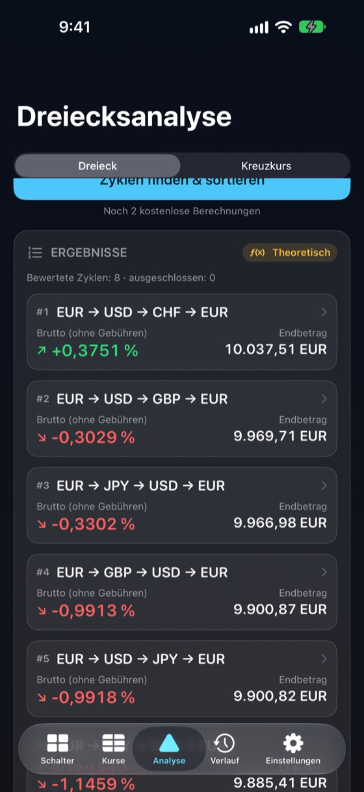
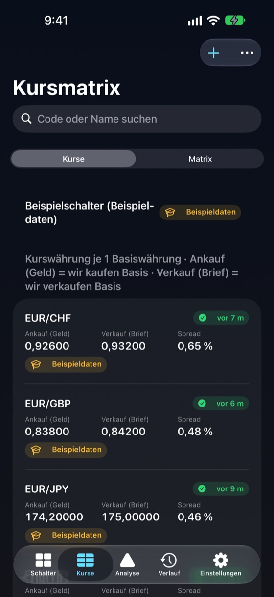
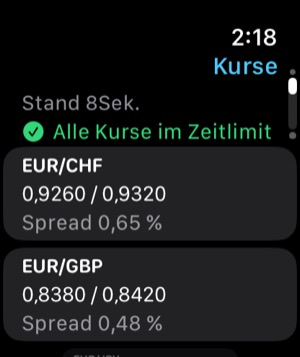

Offline-fähig
Kurstabellen, Verlauf und Berechnungen liegen auf dem Gerät. FXDesk startet und rechnet im Flugmodus.
Für Wechselstuben, Kassen und Devisenhändler
FXDesk macht aus den Kursen Ihrer Tafel eine Kursmatrix, Kreuzkurse und sortierte Umrechnungswege A → B → C → A – mit sichtbarem Spread, Gebühren und Zeitstempel.
Alles läuft auf Ihrem iPhone, funktioniert ohne Internet und stellt ein theoretisches Ergebnis nie als garantierten Gewinn dar.

Jede Zahl zeigt, woher sie stammt, wie alt sie ist und welche Kursseite verwendet wurde.
Kurstabellen, Verlauf und Berechnungen liegen auf dem Gerät. FXDesk startet und rechnet im Flugmodus.
Bewertet jeden Zyklus A → B → C → A Ihrer Tabelle in beiden Richtungen und sortiert nach geschätztem Nettoergebnis.
Ein schreibgeschützter Schnappschuss Ihres Schalters, Kursalter und letztes Ergebnis auf der Apple Watch.
Schaltermodus mit großen Zahlen, gleich breite Ziffern und Währungssuche.
Geld- und Briefkurs je Paar erfassen. Die Matrix zeigt jede Richtung – und „—“, wo kein Kurs existiert.
Verkauf der Basiswährung zum Geldkurs, Kauf zu 1 ÷ Brief. Umkehrkurse tauschen die Seiten korrekt. Mittelkurse werden nie zu einem Scheingewinn multipliziert.
Direkter Kurs gegen synthetischen Kreuzkurs über eine dritte Währung, mit beiden Spreads und Erkennung gekreuzter Märkte.
Provision je Schritt und Fixgebühr erfassen. Brutto und geschätzt netto stehen nebeneinander, Schritt für Schritt.
Eigene Kurstabellen je Schalter oder Filiale. Duplizieren, umbenennen, exportieren, importieren – Kurse werden nie vermischt.
Jede Berechnung wird mit den genauen Kursen, Zeitstempeln, Rundung und Gebühren gespeichert.
Kein Konto, keine Analyse, kein Tracking. Ihre Kurse bleiben auf Ihrem Gerät, außer Sie exportieren sie.
Drei Berechnungen gratis, dann ein einziger In-App-Kauf. Kein Abo.
Ankaufs- (Geld) und Verkaufskurse (Brief) Ihrer Tafel eingeben – oder mit dem Beispielschalter starten.
Startwährung und Betrag wählen oder einen bestimmten Drei-Währungs-Zyklus.
FXDesk verwendet für jeden Schritt die richtige Kursseite und sortiert die möglichen Zyklen.
Spreads, Gebühren, Bargeldrundung, Kursalter und Annahmen jedes Ergebnisses prüfen.
Ein Richt- oder Referenzkurs ist kein handelbarer Preis. FXDesk rechnet mit Ihren eingegebenen Kursen; es kann nicht wissen, ob ein Schalter sie einhält, die Noten vorrätig hat oder Limits setzt.
Spreads, Provisionen, Rundung auf Banknoten und die Zeit zwischen den Schritten heben kleine theoretische Differenzen meist auf. Deshalb zeigt FXDesk brutto und geschätzt netto getrennt und kennzeichnet veraltete, reine Mittel- oder Beispielkurse als theoretisch.
FXDesk ist ein Rechner. Es führt keine Geschäfte oder Umtausche aus, gibt keine Finanzberatung und garantiert keinen Gewinn.
Alle Kurse, Profile, der Verlauf und die Berechnungen liegen auf dem iPhone und funktionieren ohne Verbindung. Jeder Kurs behält Erfassungszeit und Quelle; Kurse über Ihrem Zeitlimit werden markiert – nie stillschweigend als aktuell behandelt.


Die Watch-App zeigt einen schreibgeschützten Schnappschuss des aktiven Schalters: Kurse mit Spreads, Alter des Schnappschusses, Anzahl veralteter Kurse und Ihre letzte Berechnung. Ist das iPhone außer Reichweite, bleibt der letzte Stand erhalten.
Gratis
$29.99
Einmaliger In-App-Kauf (US-Preis; lokale Preise legt der App Store fest).
Ein erfolgreiches Dreiecks- oder Kreuzkursergebnis. Ungültige Eingaben, Fehler, Kursansicht, Kursänderungen und erneutes Öffnen des Verlaufs zählen nie; dieselbe Berechnung wird nicht doppelt gezählt.
Ja. Kurse, Profile, Verlauf und alle Berechnungen liegen auf Ihrem iPhone. Nur die optionalen EZB-Referenzkurse und der Kauf im App Store benötigen eine Verbindung.
Nein. FXDesk rechnet mit Ihren Kursen. Die optionalen EZB-Referenzkurse erscheinen einmal pro Arbeitstag, sind Mittelkurse zur Information und werden nie in Berechnungen verwendet.
Ein Umtausch A → B → C → A über drei Kurse. Ist der Endbetrag nach Spreads größer als der Startbetrag, zeigt der Zyklus eine theoretische Differenz.
Nein. Das Ergebnis ist nur so gut wie die Kurse. Verfügbarkeit, Notenbestand, Limits, Gebühren und Zeitpunkt können es aufheben. FXDesk kennzeichnet Ergebnisse als indikativ oder theoretisch, nie als handelbar.
Beim Verkauf erhalten Sie den niedrigeren Geldkurs, beim Kauf zahlen Sie den höheren Briefkurs. Jeder Schritt kostet den Spread, daher enden die meisten Zyklen knapp unter dem Startbetrag.
Drei abgeschlossene Berechnungen. Fehler und ungültige Eingaben zählen nicht.
Nein. Es ist ein einmaliger, nicht verbrauchbarer In-App-Kauf, den Sie wiederherstellen können.
Einen schreibgeschützten Schnappschuss: Kurse und Spreads, Alter, Anzahl veralteter Kurse und die letzte Berechnung.
Nein. Es handelt nicht, tauscht kein Geld und verbindet sich mit keiner Bank oder keinem Broker.
Ihre Schalterprofile und Kurse, der Verlauf, Einstellungen und der Zähler kostenloser Berechnungen. Nichts wird hochgeladen; es gibt kein Konto.